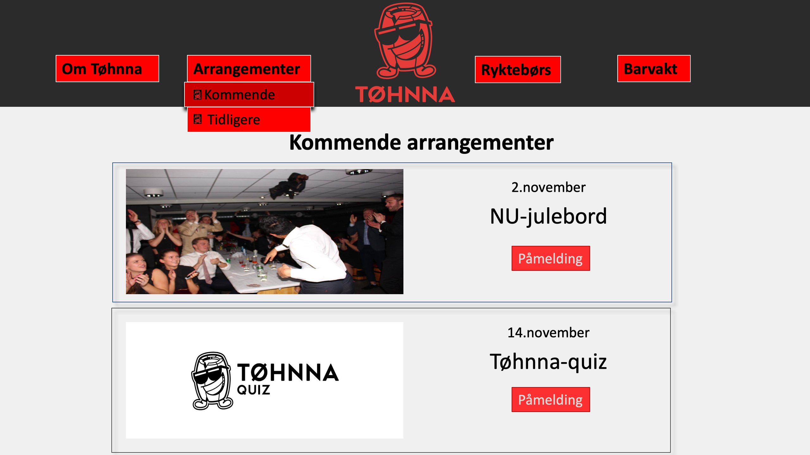
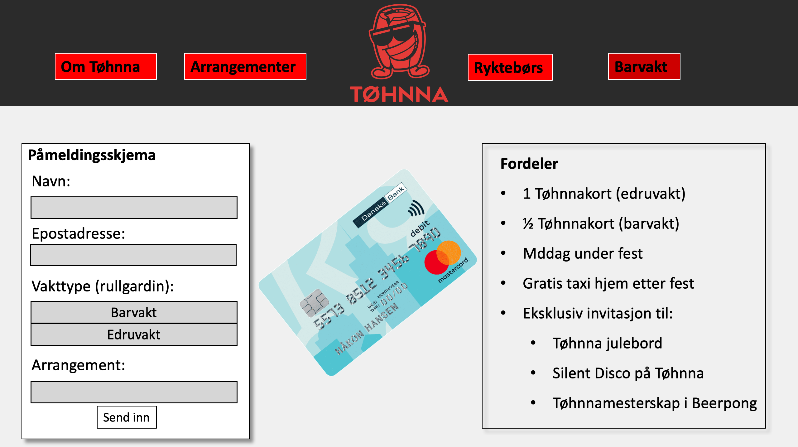
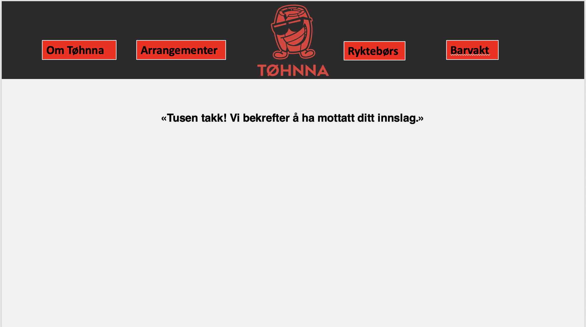

6. Beskrivelse
Da power-point formatet viser en begrenset lengde, vil ikke alt av innholdet fra sidene bli vises på mockups-bildene. Feks vises ikke alle arrangementene på mockupen til arrangement-sidene eller alle styremedlemmene på styret-siden. Til tross for at vi har kuttet ut noe innhold på samtlige mockups, får vi likevel frem hvordan vi ser for oss at designet og lay-outen vil se ut. Footeren være en del av hver del-side, som av samme grunn ikke vil vises på mockups-bildene som nå skal presenteres.
Forside

Hovedsiden skal ha et slideshow med bilder fra Tøhnna for å fremheve alt det morsomme som skjer i baren slik at man lokker flere studenter ned til baren. Slide-showet skal ha en width-på 100% og en height=415 px og skal dekke hele siden ned til footeren.
Om Tøhnna
”Om Tøhnna” er en hovedmeny i navbaren i toppen av siden. Her vil det være en rullgardin når musepekeren dras over ”Om Tøhnna”, og undermenyene vil henholdsvis være ”Generell info” og ”Styret”.
Generell info

Første underside vil være generell info. Dette vil være en informativ side om Tøhnna. Her vil det informeres om ”Hva er Tøhnna?”, ”Hva skjer egentlig på Tøhnna?” og ”Vår visjon”. Hver av de ulike underoverskriftene vil være i egne tekstbokser, hvor det også vil være et bilde knyttet til det relevante innholdet. De tre bildene skal ha en width=340px og en height=265px.
Generell info siden vil bidra med å gjøre vår side mer informativ for studentene, som også er et av formålene med siden i sin helhet. Denne siden skal være oversiktlig og lett leselig. Det vil ikke stå skrevet for mye, men vi vil heller ha fokus på å holde det kortfattet, for at det ikke skal bli for mye og for komplisert. Tekstboksene syns vi er et enkelt og oversiktlig design, som vil bidra med å oppnå formålene om informativitet. og oversiktlighet.
Styret

Andre underside under ”Om Tøhnna” vil være ”Styret”. Her vil det være en oversikt lignende den man ser på mockup-eksemplet. Det vil altså være et bilde med hver av de enkelte, navn, verv og kontaktinformasjon. Målene på bildene av styret vil være width=265px og height=340px. Det er 8 personer i Tøhnnastyret, så her vil det være 8 bokser (med ramme, uten noe annerledes bakgrunn) med info til hver enkelt. Det vil altså da være behov for å ”scrolle” nedover for å finne alle styremedlemmer.
Denne siden har med sin hensikt å orientere studentene om hvem som sitter i styret, og hva oppgavene deres er. Styret fortjener sin annerkjennelse, og det skal være informativt og oversiktlig for studentene å se hvem Tøhnnastyret er. Samtidig skal det være enkelt for studenter å ta kontakt med riktig ansvarsperson, hvis man har henvendelser på ulike ansvarsområder. Eksempel: Spm. om Quiz på Tøhnna går til arrangement ansvarlig.
Barkart

For å vise frem det gode utvalget baren har å tilby av drinker, har vi lagd en egen side for Tøhnnas barkart. Formålet med dette er å friste studentene til å delta på enda flere Tøhnna-arrangementer. Menyen skal være midstilt, med to bilder som har posisjon=fixed på hver side med målene height=340px og widht=450px
Arrangementer
Under "Arrangementer" vil det være en rullgardin når musepekeren dras over, med alternativene "Kommende arrangementer" og "Tidligere arrangementer". Boksene vil være height=5cm og width=20cm. Bildene vil ha målene height=4cm og bredde=10cm

Målet med kommende arrangement-siden er å gi studentene en god oversikt over hvilke sosiale-arrangementer som foregår på Tøhnna til enhver tid. For å tydeliggjøre dette har vi designet siden slik at arrangementene er sortert etter dato, innenfor hver sin ramme. Rammene skal være avlange, svarte, med runde kanter og skyggelagt for å gjøre arrangementene så informative, estetiske og oversiktlige som mulig. Margin-left og margin-right skal være:??. Gjennom påmeldingsknappene får studentene mulighet til å sikre seg plass til arrangementene. Påmeldingsknappen vil forstørres og endres til en mørkere farge når brukeren holder musa over den.
Da tidligere arrangementer-siden vil ha det samme designet som “kommende arrangementer”, med unntak av påmeldingsknappen, har vi ikke lagd et eget mockup-bilde til denne siden. Denne siden skal inneholde tidligere arrangementer og tilhørende bilder til Champions league-kveld, børsfest og kick-off (til skolens ulike utvalg).
Ryktebørs
Ved å trykke på "Ryktebørs" i hovedmenyen, vil det komme en rullgardin med mulighetene til å se på "Rykter" og "innsendingskjema".
Rykter
Det vi vil oppnå med rykte-siden er å underholde brukeren i tillegg til å holde studentene oppdatert på det siste som har skjedd på Tøhnna eller med STØH-studenter. Hensikten med å plassere ryktene hulter til bulter på siden er å forsøke å skape et bilde av at ryktene spres rundt og at det finnes «et rykte her og et rykte der». Spørre studass om snakkeboble-effekt funker, eller om det er andre måter å gjøre det kult på.
Rykteinnsending
Da siden ikke kan operere med en back-end, vil rykteinnsending-siden kun være fiktiv (front-end), dvs at vi ikke mottar de ryktene brukeren sender inn. Denne siden vil ha et skjema i midten med grå bokser hvor brukeren skal skrive inn informasjon. Likevel vil brukeren etter han/hun har sendt inn ryktet bli sendt videre til en egen side der bekreftelsessiden dukker opp. Innsending-siden skal være en enkel og en lettvint måte for brukerne å sende inn rykter. Dette vil være et bedre alternativ enn å oppgi en mail der det står “Send inn til følgende mailadresse:”. Her vil vi også ha JavaScript funksjonen “form validation”, som vil si at man ikke får sendt inn noe hvis man ikke har fylt inn alle utfyllingspunkter på skjemaet.
Barvakt

En av undermenyene i navbaren er barvakt. Dette er en side der studentene kan melde seg opp til barvakter/edruvakter. Denne siden vil bestå av tre deler. Det vil være et påmeldingsskjema der man kan melde seg opp til en barvakt/edruvakt, det vil være et bilde (i kursiv) i midten av et tøhnna-kort (nåværende er kun et placeholder-bilde) med målene width=7cm og height=4cm. I tillegg vil det være en fordelsliste som informerer om hvilke fordeler man får ved å ta på seg en barvakt/edruvakt. Formålet med denne siden er at det skal være enkelt for studenter å melde seg opp til en barvakt eller edruvakt. Det er samtidig viktig å påpeke at dette kun er frontend, så en oppmelding vil ikke skje i praksis. Det skal også være informativt i form av at man får informasjon om hvilke fordeler som medfølger det å ta på seg en vakt, og det skal ikke være mer tungvint enn det må være. Designet på siden vil være med på å holde det enkelt, med et enkelt påmeldingsskjema og en tekstboks med fordeler. Her vil vi også ha JavaScript funksjonen “form validation”, som vil si at man ikke får sendt inn noe hvis man ikke har fylt inn alle utfyllingspunkter på skjemaet. Er alt fylt inn, vil man bli sendt videre til Bekreftelsessiden (den samme som man blir sendt til ved rykteinnsending).
Skjemabekreftelse

«Tusen takk! Vi bekrefter å ha mottatt ditt innslag.» vil være det som dukker opp etter brukeren har sendt inn rykte, meldt seg opp på barvakt eller meldt seg på arrangementer. Den skal være så enkel som mulig, slik at det får tydelig frem at brukeren har sendt inn sitt innslag. Vi ønsker at denne siden skal være så universal som mulig, og har derfor valgt å bruke innslag som fellesbetegnelse på oppmelding, påmelding og rykteinnsending.